Música
47 recursos de Música en español, sin preparación y con solucionario: fichas de lectura, búsquedas del tesoro y más, filtrables por grado.
47 recursos
Grado

«El laboratorio del xilófono» – Búsqueda del tesoro de lectura

«Aventuras en el mercado» – Búsqueda del tesoro de lectura
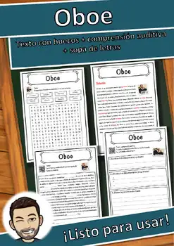
Oboe – Ficha de lectura: texto con huecos, comprensión auditiva y sopa de letras
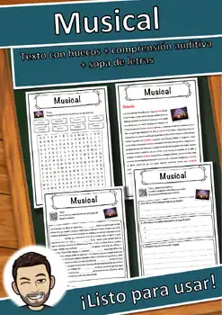
Musical – Ficha de lectura: texto con huecos, comprensión auditiva y sopa de letras
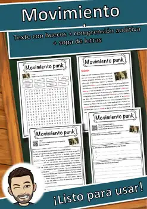
Movimiento punk – Ficha de lectura: texto con huecos, comprensión auditiva y sopa de letras
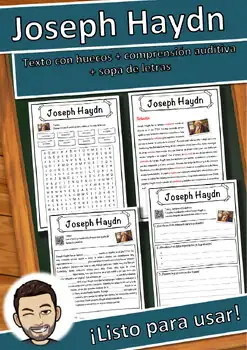
Joseph Haydn – Ficha de lectura: texto con huecos, comprensión auditiva y sopa de letras
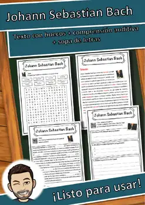
Johann Sebastian Bach – Ficha de lectura: texto con huecos, comprensión auditiva y sopa de letras
Himno nacional – Ficha de lectura: texto con huecos, comprensión auditiva y sopa de letras
Giuseppe Verdi – Ficha de lectura: texto con huecos, comprensión auditiva y sopa de letras
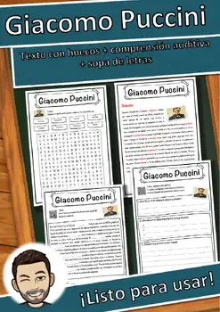
Giacomo Puccini – Ficha de lectura: texto con huecos, comprensión auditiva y sopa de letras
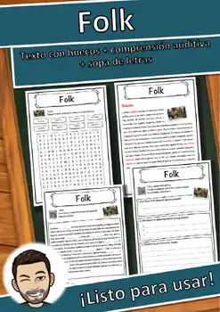
Folk – Ficha de lectura: texto con huecos, comprensión auditiva y sopa de letras
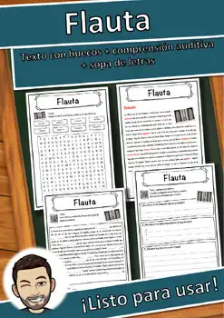
Flauta – Ficha de lectura: texto con huecos, comprensión auditiva y sopa de letras
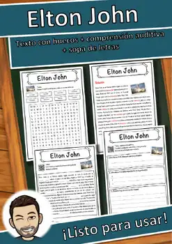
Elton John – Ficha de lectura: texto con huecos, comprensión auditiva y sopa de letras

Arpa – Ficha de lectura: texto con huecos, comprensión auditiva y sopa de letras
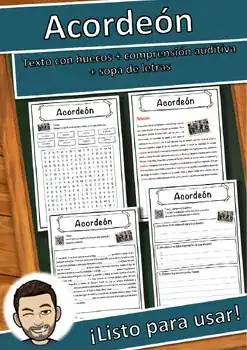
Acordeón – Ficha de lectura: texto con huecos, comprensión auditiva y sopa de letras
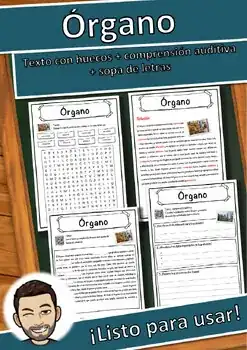
Órgano – Ficha de lectura: texto con huecos, comprensión auditiva y sopa de letras
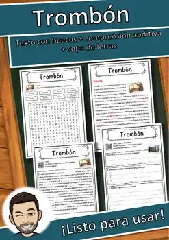
Trombón – Ficha de lectura: texto con huecos, comprensión auditiva y sopa de letras
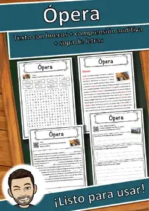
Ópera – Ficha de lectura: texto con huecos, comprensión auditiva y sopa de letras
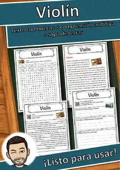
Violín – Ficha de lectura: texto con huecos, comprensión auditiva y sopa de letras
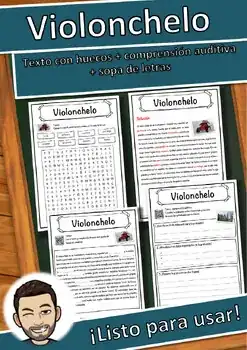
Violonchelo – Ficha de lectura: texto con huecos, comprensión auditiva y sopa de letras
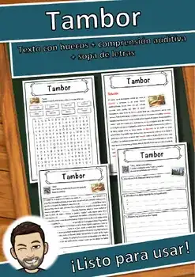
Tambor – Ficha de lectura: texto con huecos, comprensión auditiva y sopa de letras
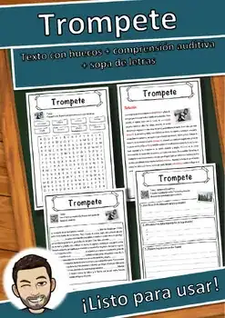
Trompeta – Ficha de lectura: texto con huecos, comprensión auditiva y sopa de letras
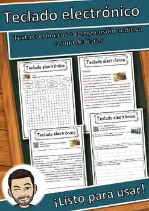
Teclado electrónico – Ficha de lectura: texto con huecos, comprensión auditiva y sopa de letras
Techno – Ficha de lectura: texto con huecos, comprensión auditiva y sopa de letras
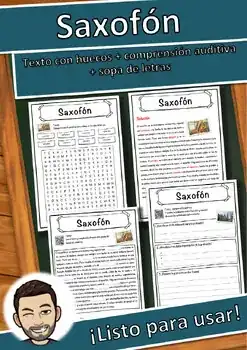
Saxofón – Ficha de lectura: texto con huecos, comprensión auditiva y sopa de letras
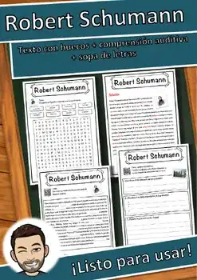
Robert Schumann – Ficha de lectura: texto con huecos, comprensión auditiva y sopa de letras
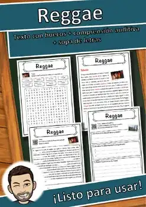
Reggae – Ficha de lectura: texto con huecos, comprensión auditiva y sopa de letras
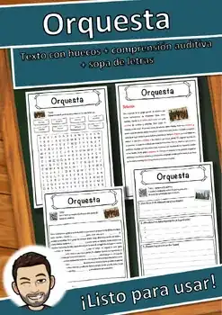
Orquesta – Ficha de lectura: texto con huecos, comprensión auditiva y sopa de letras
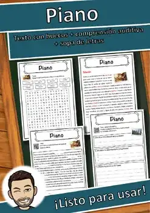
Piano – Ficha de lectura: texto con huecos, comprensión auditiva y sopa de letras
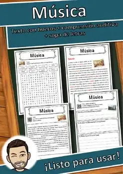
Música – Ficha de lectura: texto con huecos, comprensión auditiva y sopa de letras
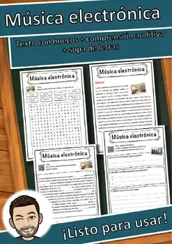
Música electrónica – Ficha de lectura: texto con huecos, comprensión auditiva y sopa de letras
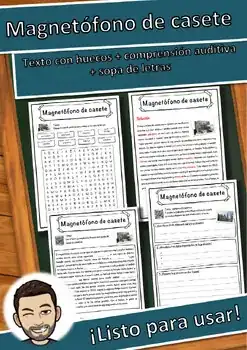
Magnetófono de casete – Ficha de lectura: texto con huecos, comprensión auditiva y sopa de letras
Discoteca – Ficha de lectura: texto con huecos, comprensión auditiva y sopa de letras
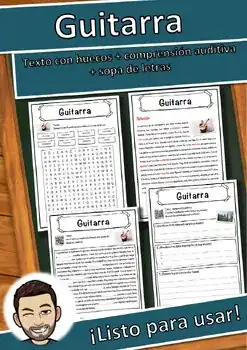
Guitarra – Ficha de lectura: texto con huecos, comprensión auditiva y sopa de letras
Flauta dulce – Ficha de lectura: texto con huecos, comprensión auditiva y sopa de letras
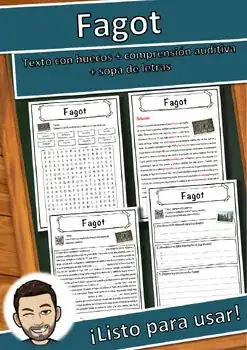
Fagot – Ficha de lectura: texto con huecos, comprensión auditiva y sopa de letras
Danza – Ficha de lectura: texto con huecos, comprensión auditiva y sopa de letras
Contrabajo – Ficha de lectura: texto con huecos, comprensión auditiva y sopa de letras
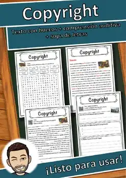
Copyright – Ficha de lectura: texto con huecos, comprensión auditiva y sopa de letras
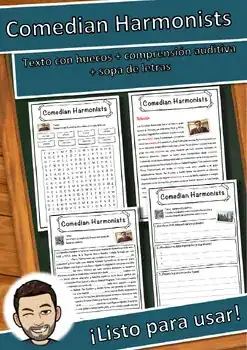
Comedian Harmonists – Ficha de lectura: texto con huecos, comprensión auditiva y sopa de letras
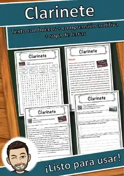
Clarinete – Ficha de lectura: texto con huecos, comprensión auditiva y sopa de letras
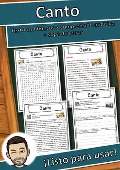
Canto – Ficha de lectura: texto con huecos, comprensión auditiva y sopa de letras
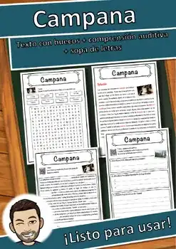
Campana – Ficha de lectura: texto con huecos, comprensión auditiva y sopa de letras
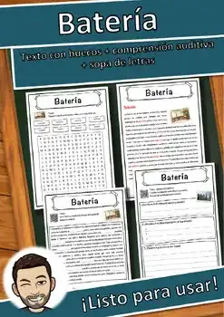
Batería – Ficha de lectura: texto con huecos, comprensión auditiva y sopa de letras
Director de orquesta
Director de orquesta – Ficha de lectura: texto con huecos, comprensión auditiva y sopa de letras
Cuerda
Cuerda – Ficha de lectura: texto con huecos, comprensión auditiva y sopa de letras
Compositor
Compositor – Ficha de lectura: texto con huecos, comprensión auditiva y sopa de letras
No se encontraron recursos. Prueba con otra palabra o con otro filtro.